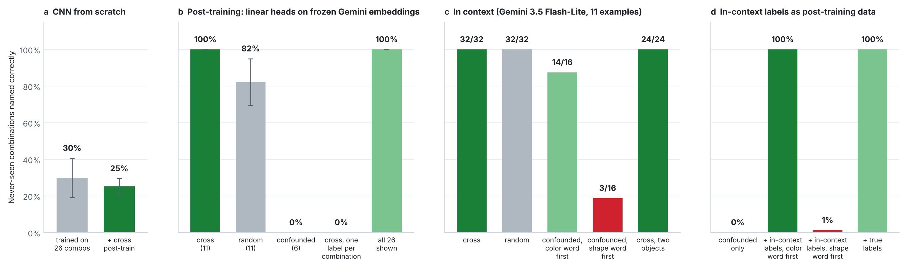
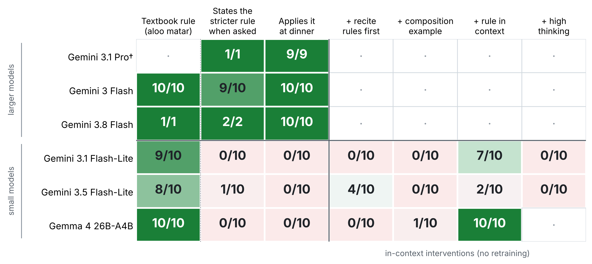

If a model knows “red” and “rectangle”, can a few examples teach it every color-shape combination, so that the examples needed grow as colors plus shapes rather than colors times shapes? Exploiting this during large-scale pretraining is hard, so I tested the two later stages where it could be used: post-training and in-context learning.

Share of never-seen combinations named correctly (color and shape both right). (a) Small CNN trained from scratch on 26 combinations, 5 seeds. (b) Ridge heads on frozen Gemini image embeddings (gemini-embedding-2), 20 seeds; error bars are sd over seeds. (c) Gemini 3.5 Flash-Lite with 11 labeled examples in made-up words; labels give exact names out of trials. (d) Heads from (b) trained on confounded examples plus 20 images labeled by Gemini 3.5 Flash-Lite in context; scored on 160 images of the 10 held-out combinations.
Grid. 6 colors × 6 shapes = 36 combinations. Ten are held out of every training set, example set and unlabeled pool, and used only for scoring.
| Example set | Combinations | Property |
|---|---|---|
| cross | 11: one full row and one full column | every color and shape, none tied to one partner |
| random | 11 of the 26 shown | same budget, no design |
| confounded | 6: each color with one shape | every word, but attributes never vary independently |
Settings. (a) a small JAX CNN with color and shape heads, trained on 12,000 images; (b) linear heads on frozen Gemini image embeddings, with one label per attribute or one per combination; (c) in context, with made-up two-word names (“dax wug”) that must be learned from the examples, color word or shape word first; (d) in-context labels used as post-training data.
Composition is cheap after pretraining, not before it: C + S − 1 examples cover C × S combinations, provided the examples are deconfounded and the targets are factorized (one label per attribute). Where post-training data are confounded, as natural data usually are, the model’s own in-context labels can fill the gap, and they carry its priors with them.
The pilot is a perception version of the augmentation in Lampinen et al. (2025), who found that in-context learning generalizes more flexibly than fine-tuning and improved fine-tuning by adding in-context inferences to its data. Next: real attribute-object pairs that natural data confound (material and object in images, verb and object in video), and compounds whose parts change each other’s meaning (“red wine”, “fake gun”), where an additive prior should fail. The open question is when the in-context prior can be trusted to fill gaps in post-training data.
Two dinner requests for Jain guests. The textbook one (“a quick aloo matar recipe”) needs the root-vegetable rule: no potatoes. The rarer one (“dinner during Paryushan”) needs a festival rule on top: many families give up all fresh vegetables and cook from dried or stored food.

Passing responses out of samples. A dinner plan passes if it serves no root or fresh vegetables, or flags each one to check with the guests. · = not run. † = run through Google AI Studio. Two LLM graders agreed on 235 of the 243 responses both graded; disagreements, and 10 responses the second grader could not reach, were resolved by reading.
Both point the same way. Composition is cheap when the parts are already known: 11 examples cover 36 combinations after pretraining, and once the rarer rule is supplied in context, Gemma 4 combines it with the dinner request in 10 of 10 answers. It fails when a part is missing, as the festival rule is in the small models, and more thinking does not recover it (0/20 at a high thinking level).
Gemini API with model-default settings and no search grounding, 2 and 3 November 2026; 10 samples per model and prompt where the free tier allowed (exceptions are visible in the table). The graders, Gemini 3.5 and 3.1 Flash-Lite, list each recommended food and classify it at temperature 0; verdicts then follow fixed rules.
Part 1: synthetic images on a 6 × 6 grid; post-training means light heads on frozen embeddings, not fine-tuning the model; 8 to 16 in-context trials per cell with one prompt template; the pilot uses one image per unlabeled combination and one teacher model. Part 2: 10 samples per cell and one wording per prompt; the graders are small models, checked by hand on every disagreement.
A. K. Lampinen, A. Chaudhry, S. C. Y. Chan, C. Wild, D. Wan, A. Ku, J. Bornschein, R. Pascanu, M. Shanahan, J. L. McClelland. On the generalization of language models from in-context learning and finetuning: a controlled study. arXiv:2505.00661, 2025.
Paryushan practice: JainGPT, “What Jains Eat During Paryushan” (jaingpt.com/guides/paryushan-food-rules); Wikipedia, “Jain vegetarianism” (the narrower leafy-greens reading).
Code, data and per-run results: github.com/RS-010806/composition (MIT License).